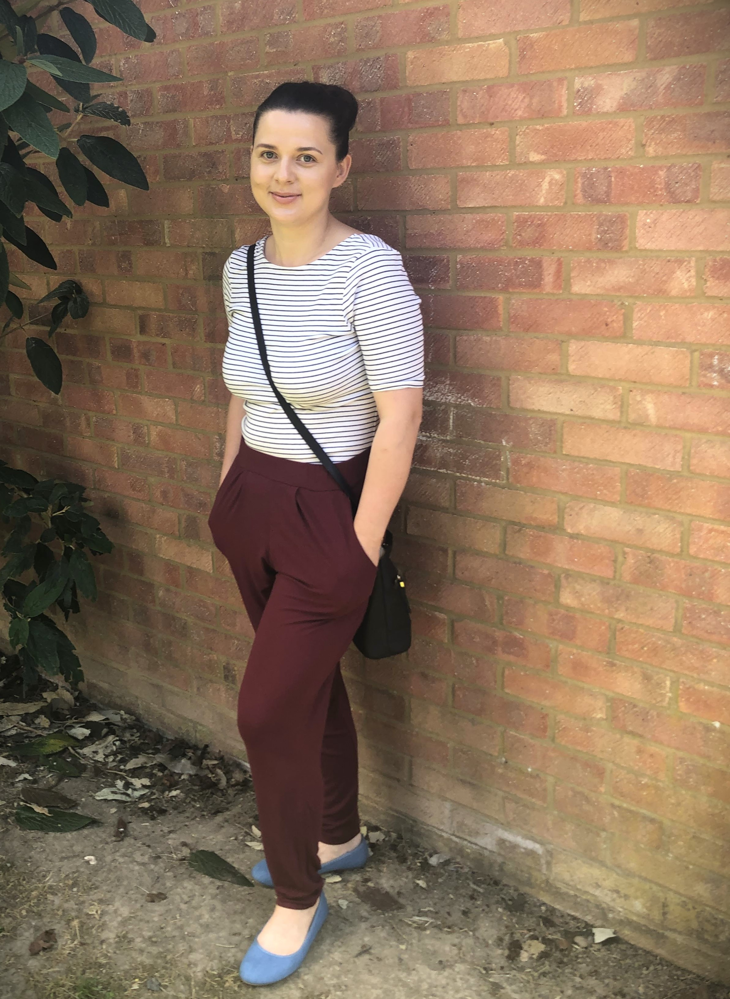

Hello! My name is Agata, and at the age of 47. Programming and graphic design are my passion. My story is one of rediscovery and transformation, proving that it's never too late to learn, grow, and pursue your dreams.
For most of my life, I followed a conventional career path, working in administrative roles across various industries. While I appreciated the stability and experience these roles provided, I always felt there was something more out there for me – something that could ignite my creativity and challenge my problem-solving skills.
A couple of years ago, I stumbled upon an online coding tutorial. What started as a casual interest quickly turned into a profound passion. I was captivated by the logic, structure, and endless possibilities that programming offered. The ability to create something out of nothing, to solve real-world problems through code, was both fascinating and empowering.
Around the same time, I also discovered graphic design. The visual aspect of design, coupled with the technical skills required, provided a perfect balance for me. I began to explore various design software, learning about color theory, typography, and visual composition. Each new skill opened up more opportunities to express my creativity and communicate ideas effectively.
My newfound skills and enthusiasm led me to Onlcisive, a dynamic company that values innovation and creativity. Here, I work as a programmer and graphic designer, collaborating with a talented team to develop cutting-edge solutions and compelling visual content. Onlcisive has given me the platform to merge my technical and artistic skills, and I am thrilled to contribute to projects that make a real impact.
I believe that learning is a lifelong journey and that it's never too late to pursue your passions. The challenges I faced while transitioning into programming and graphic design were significant, but they were also incredibly rewarding. My journey serves as a testament to the power of perseverance, curiosity, and the willingness to step out of your comfort zone.
Thank you for taking the time to learn a little about me.
